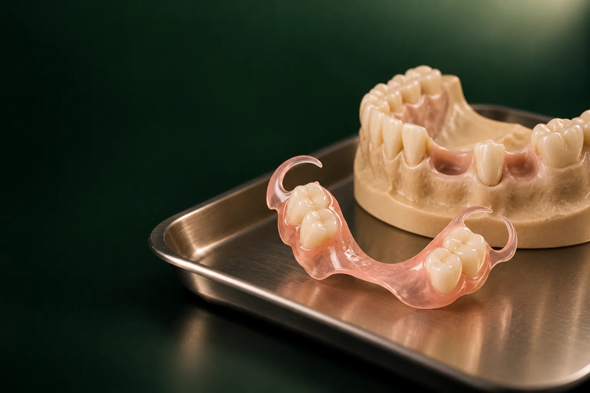

Солодухин Евгений Викторович
Главный врач, ортопед
Протезирование и восстановление зубов, протезы на имплантах
Записаться к врачу
Нейлоновый протез, съёмная конструкция без металлического каркаса: основа и крючки-кламмеры сделаны из гибкого материала цвета десны, поэтому на зубах они почти незаметны.
Имеются противопоказания. Необходима консультация специалиста.
В стоматологии «Умная Медицина» в пос. Удельная (Раменский округ) из эластичных материалов изготавливают протез Acry Free (Акри Фри), полный или частичный, от 53 900 ₽ уточняем у клиники. Материал и конструкцию подбирают стоматологи-ортопеды Солодухин Евгений Викторович и Алиханова Светлана Андреевна. Консультация ортопеда с планом лечения: бесплатная.
Протез Acry Free стоит от 53 900 ₽, и это одна цена для частичного и для полного протеза. Итоговая сумма зависит от того, сколько зубов нужно восстановить, понадобится ли подготовка: лечение или удаление зубов, и какой материал ортопед сочтёт подходящим. В таблице для сравнения: и другие съёмные конструкции.
Цены «от», минимальные: окончательную стоимость ортопед называет после осмотра и записывает в план лечения. Цены актуальны на 18.10.2026. Все услуги стоматологии: на странице цены.
уточняем у клиники
Подробнее: на странице рассрочка и налоговый вычет.
Нейлоновые зубные протезы и похожие на них конструкции называют гибкими, или мягкими: их делают из термопластичных материалов. Заготовку разогревают и под давлением отливают по модели челюсти, поэтому базис получается тонким и пластичным, а кламмеры отливают вместе с ним из того же материала. Металла в такой конструкции нет совсем.
Чаще всего встречаются три группы материалов:
Как выглядит такой протез. Это полупрозрачная розовая пластина, повторяющая форму десны, с искусственными зубами. Кламмеры охватывают свои зубы у шейки и по цвету сливаются с десной, поэтому при улыбке их почти не видно. Частичный протез небольшой и лёгкий, на верхней челюсти он обычно закрывает нёбо меньше, чем классический пластиночный.
Ортопед может предложить протез из гибкого материала, если:
Когда гибкий материал подходит хуже:
Окончательно показания и противопоказания определяет ортопед на осмотре уточняем у клиники.
Такие протезы выбирают за эстетику и комфорт, но у них есть ограничения.
Плюсы:
Минусы:
Безмономерный материал отчасти снимает эти недостатки: он жёстче нейлона, лучше распределяет давление и легче поддаётся обработке уточняем у клиники.
Классическая акриловая конструкция, жёсткая пластина из пластмассы с металлическими кламмерами. Она доступнее (частичный или полный: от 31 900 ₽), хорошо поддаётся ремонту и перебазировке, к ней можно добавить искусственный зуб, если придётся удалить ещё один свой. Но она объёмнее, к ней дольше привыкать, а металлические крючки могут быть видны при улыбке. Подробно: на странице «протез из акрила».
Протез из нейлона или безмономерного термопласта тоньше и мягче, без металла, с незаметными креплениями, но дороже и сложнее в ремонте. Отличить их можно и на вид: акриловый протез непрозрачный, жёсткий и обычно с металлическими кламмерами; Acry Free и нейлон полупрозрачные, слегка пружинят, а их кламмеры розовые.
Сравнение с бюгелем. Бюгельная конструкция держится на металлическом каркасе с дугой и передаёт часть нагрузки на свои зубы, поэтому меньше давит на десну и устойчивее при жевании. Она подходит, когда сохранились устойчивые опорные зубы; простой бюгель стоит от 58 300 ₽. Металл в ней есть, а кламмеры могут быть заметны. Подробнее: на странице «бюгельный протез». Все виды конструкций собраны в разделе «съёмные протезы».
Работа проходит в несколько визитов: часть, в кабинете ортопеда, часть, в зуботехнической лаборатории уточняем у клиники.
Общий срок изготовления и число визитов: уточняем у клиники.
В первые дни возможны лишняя слюна, изменение дикции и лёгкое натирание. Начинайте с мягкой пищи мелкими кусочками и читайте вслух: так быстрее восстанавливается речь. Если появились ранки или протез заметно смещается, не подпиливайте его сами: приходите на коррекцию.
Уход:
На ночь протез обычно снимают, очищают и хранят в контейнере: точную схему даёт ортопед.
Со временем десна и кость под протезом меняются, и он начинает хуже держаться. Тогда нужна перебазировка: обновление внутренней поверхности базиса. Перебазировка и починка съёмного протеза стоят от 13 750 ₽. Для гибких материалов возможности ремонта ограничены: нейлон перебазировать сложно, с безмономерным материалом шансов больше уточняем у клиники. Не склеивайте протез бытовым клеем: после этого его сложнее восстановить.
Все специалисты клиники: в разделе врачи.
Главный врач, ортопед
Протезирование и восстановление зубов, протезы на имплантах
Записаться к врачу
Ортопед
Восстановление зубов и протезирование, эстетичные коронки
Записаться к врачуотзыв пациента
уточняем у клиники
Плюсы: нет металла, незаметные кламмеры цвета десны, лёгкость и прочность к падениям. Минусы: нагрузка ложится на десну, нейлон прогибается при жевании, хуже полируется и плохо поддаётся перебазировке и ремонту. Acry Free жёстче нейлона и частично снимает эти недостатки.
Акриловый жёсткий, с металлическими кламмерами, доступнее и легко ремонтируется. Нейлоновый гибкий, без металла, с розовыми кламмерами, тоньше и незаметнее, но дороже и сложнее в ремонте.
Универсального ответа нет. Если важны эстетика и есть аллергия на пластмассу, чаще выбирают эластичный материал; если нужен доступный и ремонтопригодный вариант: акрил; при устойчивых опорных зубах ортопед может предложить бюгельный протез. Выбор делают после осмотра.
Акриловый: непрозрачный, жёсткий, обычно с металлическими крючками. Acry Free полупрозрачный, слегка пружинит, а кламмеры отлиты из того же материала и почти сливаются с десной.
Это тонкая полупрозрачная розовая пластина по форме десны с искусственными зубами и розовыми кламмерами, которые охватывают свои зубы у шейки. Со стороны протез почти незаметен.
Безмономерный протез, полный или частичный, от 53 900 ₽. Консультация ортопеда с планом лечения бесплатная, при оплате в день консультации действует скидка 10%, есть рассрочка.
уточняем у клиники
Да, безмономерный протез бывает и полным, и частичным, цена одинаковая: от 53 900 ₽. При полном отсутствии зубов и выраженной убыли кости ортопед может предложить и другие варианты, в том числе протез на имплантах.
Нейлон поддаётся перебазировке плохо, безмономерный материал: лучше. Перебазировка и починка съёмного протеза стоят от 13 750 ₽; что возможно с вашим протезом, ортопед скажет после осмотра.
Запишитесь на консультацию: план лечения с ценой по этапам
Имеются противопоказания. Необходима консультация специалиста.
Адрес клиники: Московская обл., Раменский округ, пос. Удельная, ул. Громова, 10/2. Клиника рядом с Жуковским; по соседству Малаховка, Быково, Ильинский, Родники, Островцы, Красково и Октябрьский. Пациенты приезжают и из Люберец, Раменского и Балашихи.
На машине: из Жуковского через Быково, без выезда в Москву. Парковка: уточняем у клиники.
На МЦД-3: до станции Удельная, от неё пешком до клиники. Из Жуковского: от станции Отдых три остановки без пересадок (Ильинская, Быково, Удельная).
В период привыкания к протезу обычно нужно несколько коррекций, поэтому удобная дорога до клиники экономит время.
Подробнее о клинике: на странице стоматология в Удельной.
Имеются противопоказания. Необходима консультация специалиста.
пгт Удельная, Раменский округ, рядом с Жуковским.
Ежедневно с 9:00 до 21:00
+7 495 150-36-15К нам ездят из Жуковского, Раменского, Быкова, Ильинского, Красково, Малаховки, Островцов, Люберец и Балашихи.
Перезвоним за 5 минут, подберём врача и удобное время.
Оставьте номер, администратор перезвонит и ответит на вопросы.
Подойдёт КТ, панорама, прицельный снимок или фото плана лечения из другой клиники. Врач посмотрит и ответит в течение рабочего дня. Это бесплатно.
Хирург, ортопед и терапевт осмотрят вас вместе, сделаем КТ. Консультация бесплатная, стоимость лечения врач назовёт после осмотра.
Консультацию ведут вместе
 ХирургМихаилОртопедЕвгений
ХирургМихаилОртопедЕвгений ТерапевтАртём
ТерапевтАртёмПервый визит бесплатно
Хирург, ортопед и терапевт посмотрят ваш случай вместе и предложат два-три варианта с ценой. Оставьте номер, администратор перезвонит и подберёт время.
Скидка 10% на лечение, если оплатить его в день консультации
Перезвоним за 5 минут, ежедневно с 9:00 до 21:00.